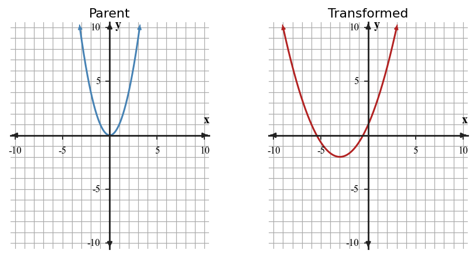
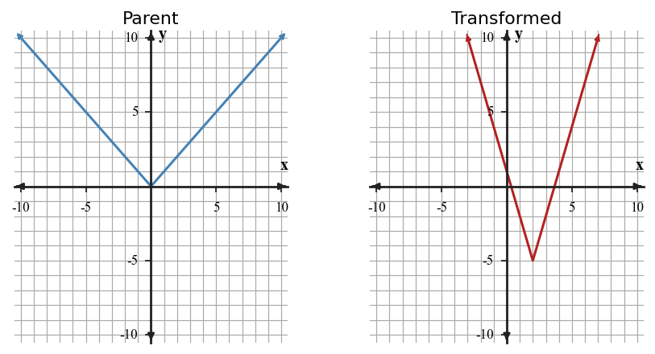

Unit 4 DOK 2.3 Transformation Graphing Task V1
Name:
Show work and mark answers clearly.
1.

Graph $y=-2|x+1|+3$. Plot the vertex and at least four transformed key points.
Graph $y=-2|x+1|+3$. Plot the vertex and at least four transformed key points.
Graph $y=-\frac{1}{2}(x-2)^2+4$. Plot the vertex and at least four transformed key points.
Graph $y=3|x-2|-5$. Plot the vertex and at least four transformed key points.
Graph $y=\frac{1}{3}(x+3)^2-2$. Plot the vertex and at least four transformed key points.

Compare the parent and transformed quadratic. List the reflection, vertical scale factor, and translation shown.

Compare the parent and transformed quadratic. List the reflection, vertical scale factor, and translation shown.

Compare the parent and transformed absolute value graph. Identify the reflection, stretch or compression, and translation.

Compare the parent and transformed absolute value graph. Identify the reflection, stretch or compression, and translation.